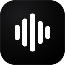

The waveform icon (option B) replaced the old purple note across every size Windows uses. Three Discord sync bugs are fixed, paused songs now show where they stopped, and there's a rainbow progress bar.
The full Windows icon set was regenerated from the waveform design — the taskbar icon, the window icon, the installer icon, and the Start-menu tiles all come from these files. You'll see the new icon after the next build/release; the currently installed version keeps the old one until then.

128 pxDiscord's own bar slides smoothly on its own. The rainbow bar above it fills left-to-right through red→purple and hops forward roughly every 15 seconds.
Before this change, pausing showed nothing about progress at all — just the song name. Now it shows exactly where you stopped, frozen. If you seek while paused, the numbers follow within ~2 s.
The loop / repeat-one / shuffle tags (🔁 🔂 🔀) and the playlist name on the artwork hover stay as they were.
If Discord wasn't running (or was restarting) at the moment a song started, the update sent to it was simply thrown away. Nothing would appear on your profile until the next event — the next track, or you pressing pause. Play a long mix and open Discord mid-way: blank profile for potentially an hour.
Now the app holds on to the last update it couldn't deliver and re-tries every 5 seconds. When Discord comes up, your song appears within seconds — and the progress bar starts at where the song actually is now, not where it was when Discord was still closed.
Position changes made while paused were deliberately ignored (they never mattered before, because a paused song displayed no position). With the new "⏸ 1:17 / 3:26" readout they matter — without this fix, you could drag the paused song to the start and Discord would keep claiming you're 1:17 in.
A position change while paused now counts as a real change and gets pushed.
Playing a one-off song outside the queue kept showing the interrupted playlist's name on the artwork hover — so your profile claimed the random song was part of, say, "late night drives".
One-off songs now show the app name there instead; the playlist name returns when the queue resumes.